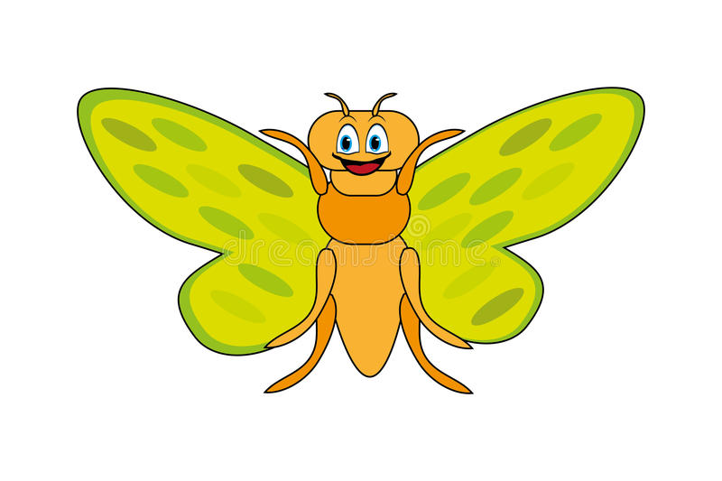

1.chameleon
Interesting Facts about chameleon
- Chameleon are reptiles that are part of the iguana suborder
- Changing skin color is an important part of communication among chameleon
- Most chameleons have a prehensile tail that they use to wrap around tree branches
 2.pigeon
2.pigeon
Intresting Facts about pigeon
- Pigeon are incredibly complex and intelligent animals
- Pigeons are renowned for their outstanding navigational abilities
- Pigeon have excellent hearing abilities.
3.camel
Intresting Facts about camel
- There are two types of camels: One humped or “dromedary” camels and two humped Bactrian camels
- Camels have three sets of eyelids and two rows of eyelashes to keep sand out of their eyes
- Camels have thick lips which let them forage for thorny plants other animals can’t eat
- Camels can completely shut their nostrils during sandstorms
 4.Teddy bear
4.Teddy bear
Intresting Facts about Teddy Bear
- The teddy was named after President Theodore Roosevelt, after he refused to shoot a bear during a 1902 hunting trip
- Meanwhile, in Germany in the same year, the Steiff family developed a silk-like fabric bear, based on zoo animals. They caused a sensation at a toy fair and were snapped up by an American buyer
- They aren’t just for children – 40% of teddy sales are for adults, and a quarter of us still has our childhood companion
- A teddy has been into space! Magellan T Bear boarded Space Shuttle Discovery in 1995 as part of a school project
5.Panda
Intresting Facts about Panda
- A giant panda is much bigger than your teddy bear
- Giant pandas are good at climbing trees and can also swim
- Pandas go from pink to white and black (or brown)
- Pandas have so many fans because they look cute
 6.Flying-Cicada
Intresting Facts about Flying Cicada
- Cicadas are like tiny violins
- Cicadas make noise like toy frogs
- Cicadas kind of ‘sweat’
- They’re underground builders
- Their enemies are the stuff of nightmares
- Some cicadas are really tiny